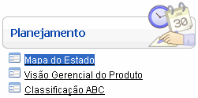
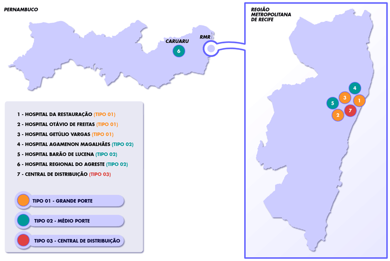
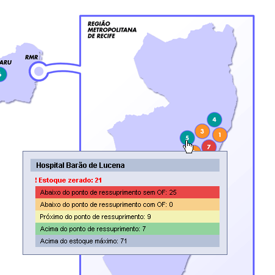

Mapa do Estado [ Voltar ]

Ao clicar no link "Mapa do Estado", no menu "Planejamento", o sistema exibirá a seguinte tela:

O mapa contém as unidades, separadas por Hospitais de grande porte, Hospitais de médio porte e Centrais de Distribuição.

Além das informações de estoque, o quadro contém também o nome da unidade. Obs: para ver as informações de estoque não é necessário clicar no local, basta simplesmente colocar o cursor sobre ele.
|